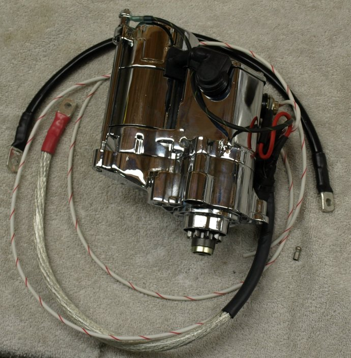
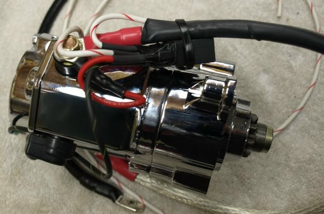
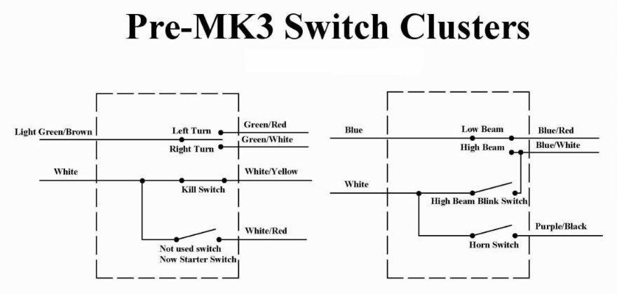
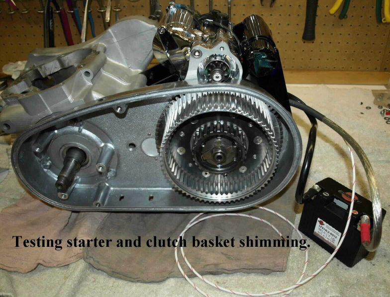

The starter battery wires are color coded for a negative grounded system, but by following the information below
all will work correctly. This harness consist of the following:

The 5/16" lug connects to the threaded lug on the starter. We will make this connection prior to shipping.
For positive ground systems the 1/4" lug connects to the negative side of the battery.
For negative ground systems the 1/4" lug connects to the positive side of the battery.
The 3/8" lug connects to the rear starter bracket allen bolt.
The bolt is threaded through the starter bracket and through the engine cradle.
The lug is threaded over the end of the bolt that sticks out from the inside of the engine cradle.
For positive ground systems the 1/4" lug connects to the positive side of the battery.
For negative ground systems the 1/4" lug connects to the negative side of the battery.

If you are using the stock switch clusters, one button is not normally used. This button is on the cluster with the turn switch. This cluster is normally found on the left side, with the un-used button on the bottom, however you may find this button on the top or on the right side. Trace the cluster wires to where they plug into a bunch of wires under the gas tank. Find the white/red wire and unplug the wire coming from the connector, leaving the connector plugged into the wire coming from the switch cluster. Thread the white/red wire from the starter through the frame and plug it into the connector.

We highly recommend purchasing our wiring harness because we can not only test the harness, but the starter motor and the shimming of the clutch basket. If the ring gear, on the back of the clutch basket, is too close to the starter motor, the starter gear cannot fully engage the ring gear. We also use special, very flexible, 4 gauge wires that make hooking up the starter to the battery very easy.
The current price for this harness (38-600210) is: $50.00 as of 02/12/21
This page was written and designed by F. H. Eaton
& Associates if you have any questions or comments please
contact us at info@fheaton.com